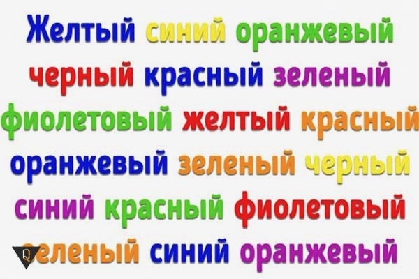

ЭФФЕКТ СТРУПА
В психологии эффектом Струпа (англ. Stroop effect) называют задержку реакции при прочтении слов, когда цвет слов не совпадает с написанными словами (к примеру, слово «красный» написано синим).
- синий
- красный
- зеленый
- желтый
- синий
- красный
- зеленый
- желтый
Эффект назван в честь Джона Ридли Струпа, впервые опубликовавшего этот тест на английском в 1935 году. До этого этот эффект был опубликован в Германии в 1929 году. Это исследование стало одним из наиболее цитируемых исследований в истории экспериментальной психологии.
Исходный эксперимент
В своих исследованиях Струп использовал несколько вариаций одного и того же теста, для которых использовались три разного рода стимула:
- Названия цветов напечатанных чёрным цветом
- Названия цветов напечатанных цветом отличным от значения слова
- Квадраты выбранных цветов
В первом эксперименте использовались варианты 1 и 2. От участников эксперимента требовалось прочитать написанные слова несмотря на использованные для написания цвета (к примеру, они должны были прочитать фиолетовый, вне зависимости от используемого цвета). Во втором эксперименте использовались стимулы 2 и 3, и от участников требовалось назвать цвета чернил, не обращая внимание на написанные слова во втором варианте и названия цветов квадратов в третьем варианте. В третьем эксперименте Струп изучал как практика влияет на то, как участники справляются с задачей.
Струп заметил, что участники дольше всего справлялись со второй задачей, нежели когда от них требовалось называть цвета квадратов во втором эксперименте. Эта задержка не проявлялась в первом эксперименте.
Применение
Тесты Струпа использовались в США для определения изменений в мозгу (возрастных и не только). Например, пациенты в депрессии медленнее называли цвета упаднических слов («война», «рак», «убийство»).В наши дни тест Струпа широко известен как метод диагностики когнитивной ригидности и гибкости познавательного контроля (гибкости когнитивного мышления), а задачи на его основе часто включаются в программы по саморазвитию и тренировке мозга.По слухам, в США 1950-x годов тест Струпа на русском языке использовали для выявления советских шпионов: человек, знающий русский, называл цвета с задержкой.